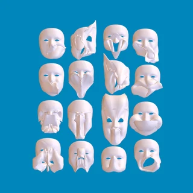

Foliage in Plush
Tree Studio in Blender, then the foliage in Plush. Two recordings from the experiments.
Read the entry →Notes from whatever I’m working on.
Tree Studio in Blender, then the foliage in Plush. Two recordings from the experiments.
Read the entry →
Blender realtime camera texture in Eevee — a custom build.
Read the entry →
Ok update: 52 ARKit shapes compressed to 16 worked pretty well!
Read the entry →![No Rig Required - Vertex Animation for Gameplay [OpenVAT] video thumbnail](https://i.ytimg.com/vi/NGniucSk4hU/hqdefault.jpg) Watch on YouTube ↗
Watch on YouTube ↗OpenVAT / Unity
Vertex animation for gameplay, using OpenVAT. The Unity side of the workflow gets its own attention here: taking baked motion into an engine and making it useful in a game.
 Watch on YouTube ↗
Watch on YouTube ↗Geometry Nodes
The system behind the nodes. A longer explanation to go alongside the short Geometry Nodes clips on Instagram.
 Watch on YouTube ↗
Watch on YouTube ↗Datablocks & users
A look underneath Blender’s interface: datablocks, users, and how the pieces of a scene relate to each other. A useful starting point for understanding what a script is changing, and why one edit can show up somewhere else.